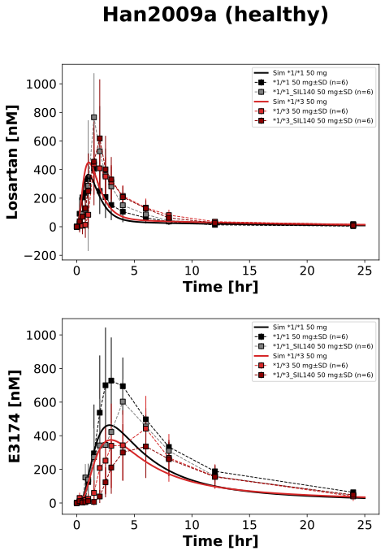

|  |
../../../../src/pkdb_models/models/losartan/experiments/studies/han2009a.py
from typing import Dict
from sbmlsim.data import DataSet, load_pkdb_dataframe
from sbmlsim.fit import FitMapping, FitData
from sbmlutils.console import console
from pkdb_models.models import losartan
from pkdb_models.models.losartan.experiments.base_experiment import (
LosartanSimulationExperiment,
)
from pkdb_models.models.losartan.experiments.metadata import (
Tissue, Route, Dosing, ApplicationForm, Health, \
Fasting, LosartanMappingMetaData, Coadministration, Genotype,
)
from sbmlsim.plot import Axis, Figure
from sbmlsim.simulation import Timecourse, TimecourseSim
from pkdb_models.models.losartan.helpers import run_experiments
class Han2009a(LosartanSimulationExperiment):
"""Simulation experiment of Han2009a."""
genotypes = {
"1": "*1/*1",
"3": "*1/*3",
}
interventions = ["", "_SIL140"]
colors = {
"1": LosartanSimulationExperiment.cyp2c9_colors["*1/*1"],
"1_SIL140": "gray",
"3": LosartanSimulationExperiment.cyp2c9_colors["*1/*3"],
"3_SIL140": "darkred",
}
info = {
"los": "losartan",
"e3174": "exp3174",
}
def datasets(self) -> Dict[str, DataSet]:
dsets = {}
for fig_id in ["Fig1"]:
df = load_pkdb_dataframe(f"{self.sid}_{fig_id}", data_path=self.data_path)
for label, df_label in df.groupby("label"):
dset = DataSet.from_df(df_label, self.ureg)
# unit conversion to mole/l
if label.startswith("losartan"):
dset.unit_conversion("mean", 1 / self.Mr.los)
elif label.startswith("exp3174"):
dset.unit_conversion("mean", 1 / self.Mr.e3174)
dsets[f"{label}"] = dset
# console.print(dsets)
# console.print(dsets.keys())
return dsets
def simulations(self) -> Dict[str, TimecourseSim]:
Q_ = self.Q_
tcsims = {}
for number, genotype in self.genotypes.items():
tcsims[f"po_los50_{number}"] = TimecourseSim(
[Timecourse(
start=0,
end=25 * 60, # [min]
steps=500,
changes={
**self.default_changes(),
#"BW": Q_(self.bodyweight, "kg"),
"LI__f_cyp2c9": Q_(self.cyp2c9_activity[genotype], "dimensionless"),
"PODOSE_los": Q_(50, "mg") * self.Mr.los/self.Mr.losp,
},
)]
)
# console.print(tcsims)
return tcsims
def fit_mappings(self) -> Dict[str, FitMapping]:
mappings = {}
for k, sid in enumerate(self.info):
name = self.info[sid]
for number, genotype in self.genotypes.items():
for intervention in self.interventions:
mappings[f"fm_po_los50_{name}_{number}{intervention}"] = FitMapping(
self,
reference=FitData(
self,
dataset=f"{name}_{number}{intervention}",
xid="time",
yid="mean",
yid_sd="mean_sd",
count="count",
),
observable=FitData(
self, task=f"task_po_los50_{number}", xid="time", yid=f"[Cve_{sid}]",
),
metadata=LosartanMappingMetaData(
tissue=Tissue.PLASMA,
route=Route.PO,
application_form=ApplicationForm.TABLET,
dosing=Dosing.SINGLE,
health=Health.HEALTHY,
fasting=Fasting.FASTED,
coadministration=Coadministration.SILYMARIN if "SIL" in intervention else Coadministration.NONE,
genotype=Genotype(genotype),
),
)
# console.print(mappings)
return mappings
def figures(self) -> Dict[str, Figure]:
return {
**self.fig1(),
}
def fig1(self) -> Dict[str, Figure]:
fig = Figure(
experiment=self,
sid="Fig1",
num_rows=2,
name=f"{self.__class__.__name__} (healthy)",
)
plots = fig.create_plots(
xaxis=Axis(self.label_time, unit=self.unit_time), legend=True
)
plots[0].set_yaxis(self.label_los, unit=self.unit_los)
plots[1].set_yaxis(self.label_e3174, unit=self.unit_e3174)
for k, sid in enumerate(self.info):
name = self.info[sid]
for number, genotype in self.genotypes.items():
# simulation
plots[k].add_data(
task=f"task_po_los50_{number}",
xid="time",
yid=f"[Cve_{sid}]",
label=f"Sim {genotype} 50 mg",
color=self.cyp2c9_colors[genotype],
)
for intervention in self.interventions:
# data
plots[k].add_data(
dataset=f"{name}_{number}{intervention}",
xid="time",
yid="mean",
yid_sd="mean_sd",
count="count",
label=f"{genotype}{intervention} 50 mg",
color=self.colors[f"{number}{intervention}"],
)
return {
fig.sid: fig,
}
if __name__ == "__main__":
out = losartan.RESULTS_PATH_SIMULATION / Han2009a.__name__
out.mkdir(parents=True, exist_ok=True)
run_experiments(Han2009a, output_dir=Han2009a.__name__)
{kind=link}